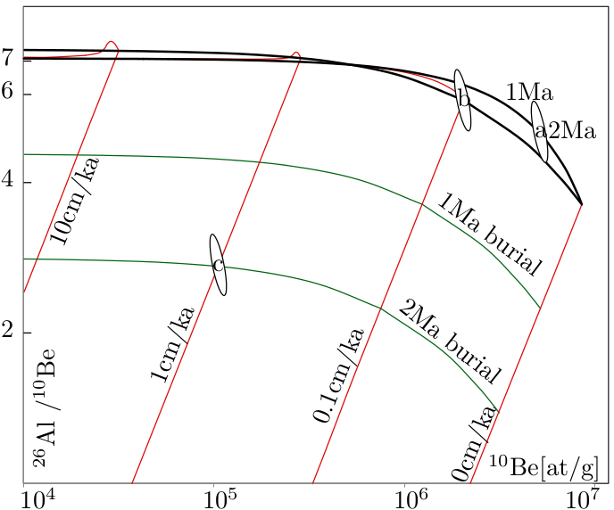
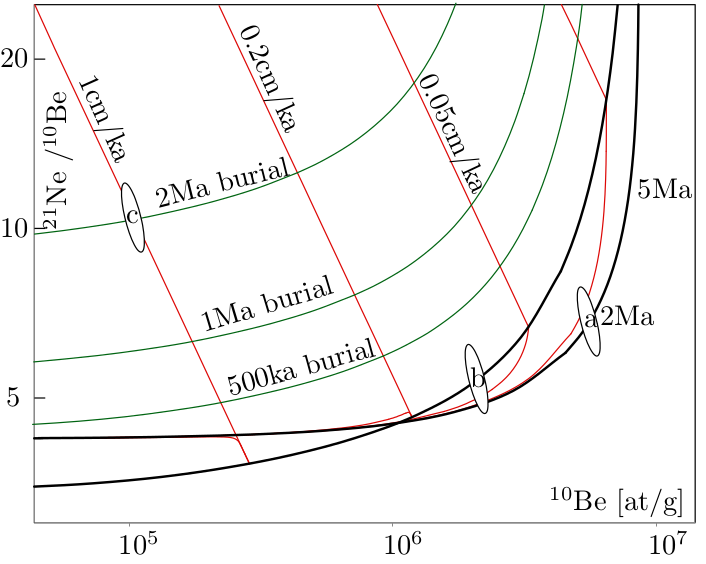

The Earth is constantly bombarded by galactic cosmic rays, which primarily
consist of protons. Many of these electrically charged particles never
reach our planet because they are deflected back into space by the
Earth’s magnetic field (see Equation 3.3). The degree of ‘protection’
provided by the magnetic field is greater at low latitudes (where the
magnetic field lines run parallel to the surface) than at the poles
(where they are perpendicular to the surface). Thus, the cosmic
ray intensity at the equator is significantly lower than at the poles,
although the average energy (or ‘rigidity’) of the cosmic rays is
higher1
The primary cosmic rays which do manage to pass through the magnetic
field strongly interact with the atmosphere and form a secondary cosmic ray
‘shower’, which is mostly made of neutrons and muons. This secondary
cosmic ray shower is rapidly attenuated as it travels down into the
atmosphere. Only a very small fraction of the secondary cosmic rays, which
mostly consist of neutrons, reach the surface of the Earth. These neutrons
then collide with the elements that are found in rocks and soils, such
as silicon, oxygen, calcium etc. When such an element is hit by a
cosmic ray, it undergoes ‘spallation’, which basically means that it
explodes into smaller particles. Most of these particles are either
very short lived or very common in the Earth’s crust. But some of
the spallation products are very rare yet sufficiently long lived to
accumulate in measurable quantities in terrestrial rocks. One example is
10Be, which has a half life of 1.3 million years. This is orders of
magnitude shorter than the age of the Earth. So, just like the 14C
discussed in Section 4.1, the existence of 10Be on our planet would be
impossible to explain without these cosmogenic production pathways.
The production of cosmogenic nuclides is restricted to the uppermost
few meters below the surface. So if the concentration of the 10Be in the
surface rocks is known, and if the production rate is known, then the
exposure age of the rock can be estimated. This is similar to measuring how
long a person has been exposed to sunlight by measuring the tan of their
skin. During the 20 years or so that cosmogenic nuclide geochronology has
been around, it has truly revolutionised various aspects of geomorphology,
such as the study of volcanoes, river incision, landslides, glaciers, sediments,
and faults.
| nuclide | half life | reaction types | target minerals |
| 3He | stable | spallation on O, Si | olivine, pyroxene |
| 21Ne | stable | spallation on Mg, Fe | quartz |
| 10Be | 1.36 Myr | 16O(n,4p3n)10Be | quartz |
| 28Si(n,x)10Be | |||
| 26Al | 717 kyr | 28Si(n,p2n)26Al | quartz |
| 36Cl | 301 kyr | 40Ca(n,2n3p)36Cl | calcite, plagioclase |
| 39K(μ-,p2n)36Cl | |||
| 40Ca(μ-,α)36Cl | |||
| 35Cl(n,μ)36Cl | |||
| 14C | 5730 yr | 16O(n,2pn)14C | quartz |
Table 8.1 lists the most commonly used cosmogenic nuclides. What all these isotopes have in common is that they are normally absent from rocks that are shielded from cosmic rays. They belong to two categories. There are the cosmogenic noble gases, which are stable, and the cosmogenic radionuclides, which are radioactive. Each of these have different applications.
In the simplest case of a stable nuclide in the absence of erosion, its concentration increases linearly with time (t). So if we measure the concentration (N) in atoms per gram of, say, quartz, and if we know the production rate (P), in atoms per gram per year, then we can simply calculate the age by dividing the concentration by the production rate:
|
| (8.1) |
Next, consider the situation of a stable nuclide and a rock surface that is in steady state erosion. To understand this situation, it is useful to imagine one in the place of a rock particle under an eroding surface. As the particle approaches the surface, it sees an exponentially increasing cosmic ray intensity and cosmogenic nuclide production rate. So in the case of an eroding surface, the cosmogenic nuclide content can be used not to measure an exposure age, but an erosion rate (ϵ). ϵ is a simple function of the production rate P and the concentration N, multiplied by a factor Λ∕ρ, where ρ is the rock density and Λ is the attenuation length (~160 g/cm-2). This factor quantifies how rapidly the cosmic ray intensity decreases with depth in the rock:
|
| (8.2) |
Let us now move on to a cosmogenic radionuclide in a surface that undergoes no erosion. Initially, the concentration of the nuclide increases almost linearly with time, but after a while, some of these nuclides are lost due to radioactive decay. Eventually, after five or so half lives, a saturation point is reached at which the production rate is balanced by the decay rate. This provides a hard upper limit of the exposure ages that can be measured with cosmogenic radionuclides. The age equation is again a function of P and N, but with the addition of a logarithm and the radioactive decay constant λ:
|
| (8.3) |
Finally, here is the full ingrowth equation in the general case of a cosmogenic radionuclide with a finite exposure age that also undergoes erosion:
|
| (8.4) |
with:
N = concentration (at/g)
P = production rate (at/g/yr)
λ = decay constant (yr-1)
Λ = attenuation length (g/cm-2)
ρ = density (g/cm-3)
ϵ = erosion rate (cm/yr)
t = exposure age (yr)
τ = burial age (yr)
There is one additional parameter, τ, which is the burial age, which will be discussed in Section 8.3. The important thing to note here is that there is one equation but three unknowns, the exposure age t, the erosion rate ϵ, and the burial age τ. So in order to solve this equation, two assumptions are needed. For example, if we assume zero burial (τ = 0) and zero erosion (ϵ = 0), then we calculate the exposure age (t). Alternatively, we can assume zero burial and an infinite exposure age (τ = 0, t=∞) and calculate the steady state erosion rate (ϵ). The only way to avoid making such assumptions and simultaneously determining both the erosion rate and the exposure age is to measure two nuclides with different half lives. The most common examples of such paired measurements are 10Be/26Al and 10Be/21Ne. A convenient method to plot and interpret such datasets is the two nuclide diagram or ‘banana plot’.
When we plot the 26Al/10Be-ratio against the 10Be concentration, we obtain
the diagram shown in Figure 8.1. Each part of this diagram has its own
applications, which will be briefly summarised next.
(i) (ii)
First consider a sample that plots on the upper line of the diagram. This
is the so-called zero erosion line, which groups all samples that can be used
for proper exposure dating. So if a sample plots on this line, we have
effectively verified the assumption that ϵ = 0. The most important example
of studies which require samples that plot on the zero erosion line are
exposure dating studies of glacial retreat. When glacial striations can be
observed on rock surfaces, this indicates that erosion has been negligible.
All those surfaces should plot on the zero erosion line of the banana
plot.
The next line down groups all the samples that are in an erosional
steady state and that, in principle have an infinite exposure age (t = ∞),
which effectively means an exposure age that is greater than five times the
half lives of both nuclides. Although erosion studies can be performed
in bedrock, they are actually most commonly done on sediments.
The motivation for this is as follows. Consider a landscape that is
in an erosional steady state and that is irradiated by cosmic rays.
Cosmogenic nuclides such as 10Be accumulate in the first 2m or so
below the surface. These rocks are removed and transported down
the drainage network, carrying the cosmogenic nuclide signal with
them. By measuring the 10Be content of a single sample of river
sediment, the average erosion rate of the entire catchment can be
calculated.
So the upper line of the 10Be/26Al banana plot is the zero erosion line, the lower line is the steady state erosion line, and the area between them is called the steady state erosion island (or banana). Above the erosion island is the ‘forbidden zone’ of physically impossible cosmogenic nuclide compositions. Samples plotting in this area are likely to suffer from methodological or analytical errors. The large area below the erosion island is the zone of complex exposure histories, in which we can find samples that have undergone at least one phase of burial. For example, consider a river sediment derived from a catchment that is in an erosional steady state (e.g., ϵ = 0.1cm/kyr) and has accumulated a measurable amount of cosmogenic 10Be and 26Al. Suppose that this sediment is washed into a cave. The roof of the cave will shield the sample from cosmic rays, so that the production of 10Be and 26Al stops, but their radioactive decay continues. So with time, the sample will move down a line on the banana plot. The burial age can be calculated from the distance of the sample below the steady state erosion island. Obviously, the most common application of burial dating is the dating of cave sediments. By measuring the age of different cave levels in the walls of a river canyon, it is possible to determine the rate of canyon incision.
So far in this Chapter, we have assumed that the cosmogenic nuclide
production rate P is known. In reality, however, this is only the case for a
handful of locations (‘calibration sites’) in the world, where the exposure
history of rocks is known through independent means (e.g. by 14C dating of
organic matter or 40Ar/39Ar dating of lava flows. These production rates
are only valid for the specific conditions (latitude, elevation, age) of each
particular calibration site. To apply the cosmogenic nuclide method to other
field settings, the production rates must be scaled to a common reference at
sea level and high latitude (SLHL). Up to 20% uncertainty is associated
with this scaling, constituting the bulk of cosmogenic nuclide age
uncertainty.
Although several efforts have been made to directly measure production
rate scaling with latitude and elevation using artificial H2O and SiO2
targets, all currently used scaling models are based on neutron monitor
surveys. The oldest and still most widely used scaling model is that of Lal
(1991). This model is a simple set of polynomial equations giving the
(spallogenic + muogenic) production rate relative to SLHL as a function of
geographic latitude and elevation.
Despite their limitations, the production rate scaling factors allow the calculation of TCN production rates at any location on the Earth’s surface, assuming that the sample is a slab of zero thickness taken from a horizontal planar surface. If these assumption are not fulfilled, the SLHL production rates must be multiplied by a second set of correction factors, quantifying the extent to which the cosmic rays were blocked by topographic obstructions, snow cover, and the thickness of the sample (‘self shielding’).